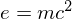
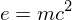

Muse Introduction
Muse Principles
Muse Introduction
Muse PrinciplesMuse应该看作是一种排版系统，具有一下特点：
Muse Tags这些tags是可以嵌套的（例如本文中的例子）
muse-publish-contents-depth控制<markup function="markup_func">...</markup>
<class name="myclass">my text</class>
script ==(interpreter)==>
muse source ==(markup function)==>
published document
<include file="include_file" markup="markup_fun"/>
Muse中的快捷键Muse 模式中使用的快捷键
这是在每一个 Muse buffer 中可用的快捷键概要。
C-c C-a (`muse-index')
显示所有已知 Muse 页面的索引。
C-c C-b (`muse-find-backlinks')
找出所有引用了当前页的页面。
C-c C-c (`muse-follow-name-at-point')
访问当前位置处的链接。
C-c C-e (`muse-edit-link-at-point')
编辑当前位置处的链接。
C-c C-f (`muse-project-find-file')
打开另一个 Muse 页面。提示输入文件名。
C-c C-i (`muse-insert-tag')
交互地插入一个标签。
C-c C-l (`font-lock-mode')
对当前 buffer 触发 font lock / highlighting（语法高亮）。
C-c C-p (`muse-project-publish')
发布所有更改了的 Muse 页面。
C-c C-s (`muse-search')
在当前项目的所有文件中查找文本。
C-c C-t (`muse-project-publish-this-file')
发布当前访问的文件。如果当前文件可以被使用不止一种风格发布，提示输入风格。
C-c C-T (`muse-publish-this-file')
发布当前访问的文件。提示风格和输出目录。
C-c C-v (`muse-browse-result')
显示当前页面的发布结果。
C-c = (`muse-what-changed')
将当前页面与最近备份版本比较。
C-c TAB l (`muse-insert-relative-link-to-file')
交互地插入一个链接到一个文件中。
C-c TAB t (`muse-insert-tag')
交互地插入一个标签。
C-c TAB u (`muse-insert-url')
交互地插入一个 URL。
TAB
移动光标到下一个 Wiki 链接。
S-TAB
移动光标到上一个 Wiki 链接。
M-TAB
补齐当前位置来自当前项目的一个页面的名字。
M-RET
在当前位置插入一个新的列表项，同时正确缩进。
C-<
减少当前位置列表项的缩进。
C->
增加当前位置列表项的缩进。
Muse 注释行注释行由一个分号加空白字符起始：
; comment line (you won't see)
以下应该看不到：
TIP: M-;可以用来给muse原代码加注释，注释行会在代码中首先被删除 然后整个muse文件才会被处理，因此muse任何标记对注释行不起作用。
Muse 列表项
无序列表无序列表由空白字符加连字符起始:
- unorder list item 1 nextline resume - unorder list item 2 - unorder list item 3
效果如下:
有序表有序表由空白字符加数字加句号起始:
1. order list item 1 2. order list item 2 3. order list item 3
效果如下:
定义列表定义类表由空格加定义相加空格加两个冒号加空格(或换行)起始:
Term1 ::
This is a first definition
And it has two lines;
no, make that three.
This is a second definition
Term2 ::
Term3 :: This is the second style
多级列表
Muse段落分级Muse中的大纲级别是以1－9个星号加一个空格开始的：
* 一级大纲 ** 二级标题 *** 三级标题 .... ********* 九级标题
Muse 水平分隔线四个连续的连字符
----
效果如下
Muse 中的字体设置
下划线(专有名词)：_underline_
效果如下：
underline
等宽字体：=deleted=
效果如下：
deleted
强调：*emphasized*<br/> **strong emphasized**<br/> ***very strong emphasized***<br/>
效果如下：
emphasized
strong emphasized
very strong emphasized
注意：在muse-mode中这些标记范围可以跨越多行，但是开始部份不能在行首出现， 至少和行首之间有一个空白，但是这个bug不影响发布。这几种标记的两端必需和文本的其他部份 以空白分割开，而且包含的文本中不能有类似标记，否则结果不可预料。
Muse 中的行分隔符分隔符示例：
one line<br/> next line
效果：
one line
next line
去掉分割符的效果
one line next line
Muse 中的段落分隔符用一个或多个空行（两个以上相连的换行符号）来分隔段落
paragraph1 paragraph2
效果如下：
paragraph1
paragraph2
注意： 有的muse标记默认下级文本为段落结构， 那么标记和前面文本之间可以没有空行。 但后边必需有。muse源文件中各个内容间推荐至少要有一个空行， 例如标题，水平线，标签等，甚至嵌套的标签中也尽量使用空行（除非空行会被显示）
Muse 文本居中设置居中文本以六个或者更多的空白字符开始：
centered text
效果如下：
centered text
Muse中的特定风格
引用<cite> <quote> 标签可以用来标记引用段落, 它们之间的不同是前 者标识嵌入在文本中的引用，后者是单独的引用段落：
before cite <cite> cited text </cite> after cite
效果如下：
before cite cited text after cite
before quote <quote> quoted text </quote> after quote
效果如下：
before quote
quoted text
after quote
另外，以空格开头（不足4个空格）的一段文字也被翻译成段落引用：
quoted text quoted text2<br/> quoted text
效果如下：
quoted text quoted text2
quoted text
示例<example> 标签用来标记示例，默认采用等宽间距，保留空白和muse标记
<example> #!env perl print "hello world!"; ... /example> ;avoid embed example tag
效果如下：
#!env perl print "hello world!";
代码代码文本采用等宽字体，抄录格式（不解释muse标记）， 不保留空白和换行，适合嵌入段落中的代码部份：
<code>
# include<stdio.h>
int main(){
int i=3;
return i;
}
</code>
效果如下：
# include<stdio.h>
int main(){
int i=3;
return i;
}
诗章诗章段落保存了下级文本的空白和换行。 诗章格式的段落以大于号和空白开头：
> A line of verse > The second line
效果如下：
A line of verse
The second line
也可以用<verse>标记一组段落：
<verse> A line of Emacs verse; forgive its being so terse. In terms of terse verse, you could do worse. </verse>
效果如下：
A line of Emacs verse;
forgive its being so terse.
In terms of terse verse,
you could do worse.
抄录抄录格式保留下级文本中的muse标记，但是不保留空白和换行， 适合嵌入段落中的文本：
<verbatim> <verse> #title Title </verse> one line another line </verbatim>
效果如下： <verse> #title Title </verse> one line another line
超级链结
显式的带有描述的超级链接（或者邮件地址）超级链结按照以下方式书写
[[http://www.sohu.com][sohu]]<br/> [[http://www.sohu.com]]<br/> [[mailto:mmmmyddd@freeshell.org][mail to me]]
效果如下：
sohu
http://www.sohu.com
mail to me
注意：
[[http://www.google.com][res/firefox-document.png]]
效果如下：
隐式的嵌入超级链结http://www.sohu.com mailto:mmmyddd@freeshell.org
效果如下：
http://www.sohu.com mailto:mmmyddd@freeshell.org
muse是通过正则表达式muse-url-regexp来判断一个字符串是否是隐式的超级链结。
图片图片实际上是特殊的链结，如果在添加链结的时候，muse能够 判断出该链结是指向本地或远程图片的(采用正则表达式muse-image-regexp)， 那么会将该链结作为图片发布.
[[res/firefox-document.png]] [[res/firefox-document.png][res/firefox-document]] [[http://www.google.com/intl/en_ALL/images/logo.gif][image with description]] [[http://www.google.com/intl/en_ALL/images/logo.gif]]
效果如下 no title
| res/firefox-document |
has title
另一组： not title
not title
| image with description |
has title
可以看出带有标题的图片是以段落居中格式发布的， 而没有标题的图片是以inline格式发布的
注意：相对路径总是可以被接受的，而如果写绝对路径，那么在发布的时候会 采用file://类型的链结，有时候是不可以接 受的，这时候更改muse-colors-inline-image-method的值可以定制查找 文件的方式，默认是在当前buffer所在目录查找（default-directory), 也可以采用发布目录（muse-colors-use-publishing-directory)。 （muse-mode编辑编辑模式貌似对这个变量不敏感,还是在用default-directory中寻找）。
(setq muse-colors-inline-image-method
'muse-colors-use-publishing-directory)
这样我们可以在图片中使用pic/image.png这种相对路径， 但需要在发布前将图片所在文件拷贝到发布目录中去。
[[res/firefox-document.png]]
效果如下：
更好的解决方案是将文件在发布的时候直接拷贝到对应目录上， 这需要对muse的发布作定制。
锚点锚点实际上是一个muse文档中的特殊命令：
#anchorName
在此插入一个锚点 并且在脚注1上添加对锚点的引用。
当然，也可添加针对在项目内的其他页面中定义的锚点， 只需要将锚点名称加在定义锚点页面名称之后即可。
项目内部的页面链结对于项目内的普通的资源文件，可以这样引用（有扩展名需要写全）
[[./res/test-file][./res/test-file]]
效果如下：
如果想引用项目内部的链结,可以用使用相对路径的muse文件名 （不加上扩展名.muse），默认在项目目录里寻找。
[[w3m][w3m]]
如果加上了扩展名就产生了对输出格式的依赖，因此只对于特定格式的 输出是可用的，例如：
[[./w3m.html][w3m.html]]
效果如下：
以上链结对于html的输出是有效的，但是这这种情况是巧合， 因此上面链结将在muse-mode中显示为断开的链结，需要相应的给项目添加 相应的文件：
w3m.html
项目内部的文件链结如上节所述，这种使用了扩展名的引用方法，主要用于项目内部的链 结，大多数发生在图片和多媒体文件、压缩文件等，并且在项目内部 的引用，也可用于跨项目引用资源文件。
muse通过变量muse-file-regexp来区分文件和页面之间的区别：
凡是满足muse-file-regexp正则表达式的链结地址被认为是文件， 否则被认为是不带扩展名的muse页面。
当使用<tab>导航至断开的链结上敲回车，muse会为该链结新建一个 文件缓冲去，对于页面文件在文件名末尾添加muse文件扩展名，由变量 muse-file-extension指定，而对于其他文件则不会添加。
项目间页面链结采用下面代码来启动项目间页面链结：
然后在.emacs配置文件中加入下面代码：
(require 'muse-wiki)
(muse-configure-highlighting
'muse-colors-markup muse-colors-markup)
项目之间的引用也不会使用上面两个小节的方式， 因为容易产生对项目之间相对路径的依赖，
采用以下方式来引用项目间的页面：
website: muse: anchor Name
website: muse: anchor Name
debian
website: muse
也可以采用隐式链结：
这样在muse-project-alist中定义的项目名都可以用作Wiki Name, 最后这种情况会访问debian项目的默认页面。但是这样作产生的问题是 所有的项目间的引用都是本地的file:// 链结。如果想发布到网上，需要重配置各项目的网络路径， 定制变量muse-wiki-interwiki-alist。
也可采用显式链结
[[EmacsWiki::test][test@EmacsWiki]]
Muse 支持多级目录？如下显式连接所示，可以引用到多级项目任何目录下
[[Blog::Computer/Debian/addnewresolutionundervmware]]
效果如下：
Blog: Computer/Debian/addnewresolutionundervmware
脚注添加脚注需要使用footnote-mode,进入该模式后：
C-c ! a 插入脚注
C-x C-x 返回插入点
例如，在这里2插入一个脚注。
表格muse支持三种风格的数据表生成：
head || head
body | body
tail ||| tail
效果为：
| head | head |
|---|---|
| tail | tail |
| body | body |
|-------+-------+-------| | head1 | head2 | head3 | |-------+-------+-------| | data1 | data2 | data3 | |-------+-------+-------| | data2 | | | |-------+-------+-------|
效果如下：
| head1 | head2 | head3 |
|---|---|---|
| data1 | data2 | data3 |
| data2 |
+----------+---------+++++++-----------+
|mult line |cell |split|cell |
| | | +-----------+
| | | |split |
| | | | |
+----------+---------+++++++-----------+
|cell spaned | cell span |
+----------+---------------+ |
| |single line | |
+----------+---------------+-----------+
效果为：
+———-+———+++++++————+
| mult line |cell |split|cell | |||||
| +————+ | |||||
| |split | |||||
+———-+———+++++++————+
| cell spaned | cell span | |
| +———-+—————+ | ||
| |single line |
+———-+—————+————+
如果需要禁用muse表格，需要在 muse文件头部添加指令：
#disable-tables t
Muse中语法高亮显示源代码采用<src>标签嵌入源代码：
<src type="c">
#include <stdio.h>
int main()
{
printf("hello\n");
}
</src>
效果如下：
#include <stdio.h> int main() { int i=1+2; printf("hello\n"); return 0; }
新版的muse已经可以处理<src>标签了， 这里给出一个比较好的处理函数，考虑到color-theme中的颜色。 muse-color-code
;; comments (defun test() ())
也可以通过javascript前端来高亮：
<literal>
<pre class="brush:python; gutter:true; toolbar:true; ruler:false;">
def aFunc():
x = 2
def aInnerFunc():
for i in range(0,2):
x +=1
print "Inner Print", x
aInnerFunc()
aFunc()
</pre>
</literal>
效果如下：
def aFunc():
x = 2
def aInnerFunc():
for i in range(0,2):
x +=1
print "Inner Print", x
aInnerFunc()
aFunc()
Muse中支持Latex公式编辑可以使用<latex>标签：
inline formula:before
<math>
e=mc^2
</math>
after
block formula:
<latex>
\begin{displaymath}
e=mc^2
\end{displaymath}
</latex>
another block formula:
<latex>
$$e=mc^2$$
</latex>
效果如下：
inline formula:before  after
block formula:

another block formula: 
Muse中HTML相关的嵌入对象可以用<literal>来插入embed
或者object:
Another Test
The player will show in this paragraph
Muse的头部指令Muse中以＃开头的行为指令行
创建和管理Muse项目在.emacs配置文件中增加如下行：
(require 'muse-project) (setq muse-project-alist '(("website" ; my various writings ("~/Pages" :default "index") (:base "html" :path "~/public_html") (:base "pdf" :path "~/public_html/pdf"))))
其中~/Pages是muse文件的主项目目录，而每一中发布类型都有一个相应的发布目录， 作为发布的输出。
默认的访问页面是index。
默认情况下，muse文件的扩展名为.muse，但是可以通过muse-file-extension来重新定义。 只有具有该扩展名的文件才关联muse项目。在发布的时候会将扩展名换成和发布格式 相关法的格式，例如muse.muse被发布为muse.pdf和muse.html。 如果想将所有文件都包含在muse项目中，并且根据项目文件的 位置来决定是否关联muse-mode，可以采用以下配置代码：
(setq muse-file-extension nil
muse-mode-auto-p t)
muse-mode-auto-p表示将根据项目路径的位置 自动侦测并在打开文件的时候关联到muse-mode。
2. example foot note
Wiki comments powered by Disqus

Contact: mmmyddd[AT]github.io 2009-2014 © CopyLeft Contributed |
[ Top | Up | Dir | Home ] |
|||||